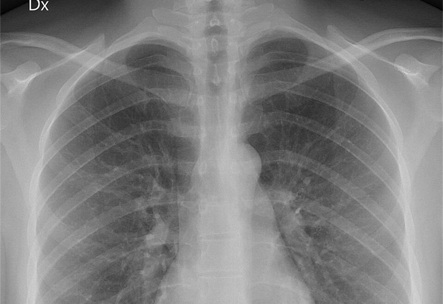

_chest_radiograph_(X-ray).jpg){kind=link}
O que estudei
- Radiação: tipos, usos e riscos
- Decisões da comunidade sobre o uso da radiação
Radiação é energia que se desloca pelo espaço. A não ionizante, como a das ondas de rádio e da luz, tem menos energia. A ionizante, como a dos raios X, consegue arrancar elétrons dos átomos.
É por isso que o celular pode ficar ligado o dia todo, mas a sala de raio X precisa de proteção. O risco depende do tipo de radiação, da dose e do tempo.
Hospitais usam radiação em exames e tratamentos, e usinas nucleares usam para gerar energia. O nível pode ser medido com um contador Geiger.
Atividades e trabalhos
- Atividade: Radiação e decisões na comunidade
A atividade perguntava como uma comunidade decide se aceita ou não uma tecnologia com radiação. A resposta passa por comparar benefícios e riscos com informação confiável.
Evidências da aprendizagem
A atividade foi entregue na plataforma de tarefas do Senac.
Minha reflexão
Wi-Fi também é radiação, só que não ionizante. Nesse ponto a Física encostou no curso de IoT, que usa rede sem fio o tempo todo.